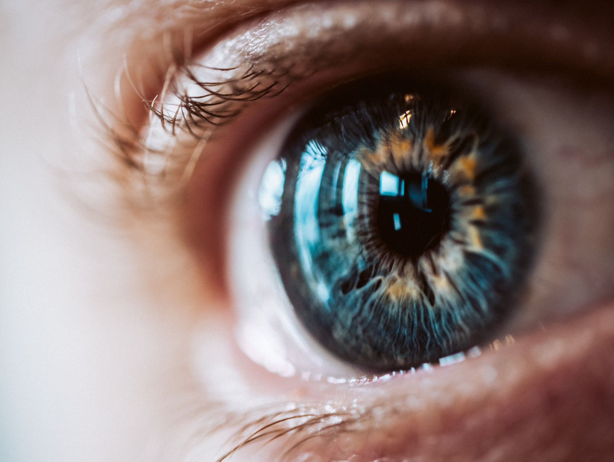

<style>
    .hashtags {
        text-align: center;
        max-width: 800px;
        margin: 20px auto;
        padding: 10px;
    }

    .hashtags a {
        display: inline-block;
        margin: 5px;
        padding: 8px 12px;
        font-size: 0.9rem;
        font-weight: bold;
        text-decoration: none;
        color: #fff;
        background-color: #264653;
        border-radius: 20px;
        transition: background 0.3s ease;
    }

    .hashtags a:hover {
        background-color: #001f3f;
    }

    body {
        font-family: Arial, sans-serif;
        margin: 0;
        padding: 0;
        background-color: #f5f5f5;
        color: #333;
    }

    h2 {
        font-family: "Arial", sans-serif;
        font-size: 2.5rem;
        font-weight: bold;
        color: #001f3f;
        margin-top: 20px;
        text-align: center; /* Center the title */
    }

    p {
        font-family: "Arial", sans-serif;
        font-size: 1rem;
        line-height: 1.8;
        text-align: justify;
        margin: 20px auto;
        max-width: 800px;
    }
li {
    font-family: "Arial", sans-serif;
    font-size: 1rem;
    line-height: 1.8;
    text-align: justify;
    margin: 20px auto;
    max-width: 800px;
}
    .container {
        display: flex;
        flex-direction: column;
        align-items: center;
        padding: 20px;
    }

    img {
        margin: 20px auto;
        border-radius: 8px;
        width: 100%;
        max-width: 800px;
        height: auto;
        box-shadow: 0 4px 8px rgba(0, 0, 0, 0.2);
    }

    .text-muted {
        font-weight: bold;
        color: #264653;
    }

    .references {
        max-width: 800px;
        margin: 20px auto;
    }
</style>

<section id="project-details">
    <div class="container">
        <!-- Page Header -->
        <h2>How Space Changes Vision: Understanding the Long-Term Effects of Spaceflight on Astronaut Eyes</h2>

        <!-- First Image and Description -->
         
      <p>When astronauts spend months in space, their vision isn’t the same when they return. Spaceflight-Associated Neuro-Ocular Syndrome (SANS) is a growing concern, with astronauts experiencing optic disc swelling, choroidal folds, and retinal thickening, potentially leading to permanent vision impairment. But what if we could predict who’s at risk before they even launch?</p>
      <p>A NASA-led study, iSAFE (Investigating Structure and Function of the Eye), is investigating how spaceflight reshapes eye anatomy and affects visual performance over time. Researchers from NASA Johnson Space Center, UCLA Doheny Eye Institute, and University of Texas Medical Branch are using MRI, Optical Coherence Tomography (OCT), and genetic screening to understand how the eye and brain adapt—or struggle to adapt—to microgravity.</p>
      <strong>Why this matters for spaceflight:</strong>
         
      <ol>
        <li>Helps identify astronauts at higher risk of vision impairment before missions.</li>
        <li>Develops long-term solutions for protecting vision in deep space.</li>
        <li>Advances our understanding of how microgravity alters neurovascular health.</li>
      </ol>
      <p>The ability to see clearly and process visual information is critical for astronaut performance, whether on a spacewalk or piloting a spacecraft. As space medicine advances, so must our strategies to preserve human adaptability in extreme conditions.</p>
        <!-- Hashtags -->
        <div class="hashtags">
            <a href="https://www.google.com/search?q=SpaceMedicine" target="_blank">#SpaceMedicine </a>
            <a href="https://www.google.com/search?q=Neuroscience" target="_blank">#Neuroscience  </a>
            <a href="https://www.google.com/search?q=RadiationBiology" target="_blank">#RadiationBiology </a>
            <a href="https://www.google.com/search?q=AstronautHealth" target="_blank">#AstronautHealth </a>
            <a href="https://www.google.com/search?q=SyntheticBiology " target="_blank">#SyntheticBiology  </a>
            <a href="https://www.google.com/search?q=Bioengineering " target="_blank">#Bioengineering </a>
            <a href="https://www.google.com/search?q=AIinNeuroscience" target="_blank">#AIinNeuroscience</a>
            <a href="https://www.google.com/search?q=FutureOfAstronauts" target="_blank">#FutureOfAstronauts</a>
            <a href="https://www.google.com/search?q=VisionResearch" target="_blank">#VisionResearch</a>
        </div>

        <!-- References Section -->
        <div class="references">
            <h3>References</h3>
            <ol>
                <li>Macias, B.R. et al. Investigating Structure and Function of the Eye (iSAFE). NASA Johnson Space Center, UCLA Doheny Eye Institute, University of Texas Medical Branch.</li>
            </ol>
        </div>
    </div>
</section>
